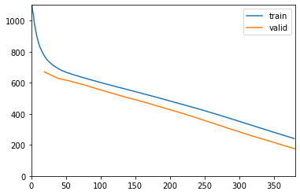
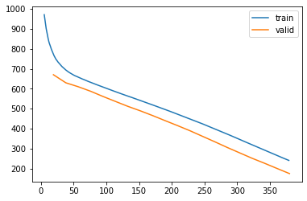
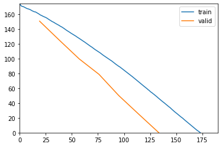
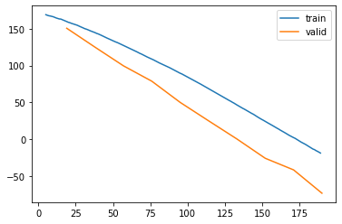
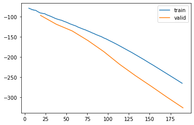

%load_ext autoreload
%autoreload 2Hainich with ERA-Interim controls
from meteo_imp.kalman.fastai import *
from meteo_imp.kalman.filter import *
from meteo_imp.utils import *
from meteo_imp.data import *
from fastai.tabular.learner import *
from fastai.learner import *
from fastai.callback.all import *
from meteo_imp.kalman.fastai import show_results
import pandas as pd
import numpy as np
import torchhai = pd.read_parquet(hai_path)
hai64 = pd.read_parquet(hai_path64)
hai_era = pd.read_parquet(hai_era_path)
hai_era64 = pd.read_parquet(hai_era_path64)imp_dataloader?Signature: imp_dataloader(df, control, var_sel, gap_len, block_len, control_lags, bs) Docstring: <no docstring> File: ~/Documents/uni/Thesis/GPFA_imputation/meteo_imp/kalman/fastai.py Type: function
dls = imp_dataloader(hai64[:5*20_000], hai_era64, var_sel = ['TA', 'SW_IN'], block_len=200, gap_len=10, bs=20, control_lags=[1]) # about 5 year of datamodel = KalmanFilter.init_random(n_dim_state = hai.shape[1], n_dim_obs=hai.shape[1], n_dim_contr=hai_era.shape[1] * 2, dtype=torch.float64).cuda()
loss_func = loss_func=KalmanLoss(only_gap=True)
learn = Learner(dls, model, loss_func, cbs=[ShowGraphCallback, Float64Callback], metrics=[msk_rmse, msk_r2])
learn.fit(20, 1e-2)| epoch | train_loss | valid_loss | rmse | r2 | time |
|---|---|---|---|---|---|
| 0 | 779.496685 | 670.230411 | 0.530164 | 0.745243 | 00:41 |
| 1 | 696.612051 | 629.791250 | 0.394562 | 0.859304 | 00:42 |
| 2 | 659.455699 | 610.032977 | 0.376511 | 0.871858 | 00:44 |
| 3 | 633.088566 | 587.324999 | 0.349259 | 0.889664 | 00:46 |
| 4 | 609.396140 | 561.091301 | 0.297874 | 0.920137 | 00:47 |
| 5 | 586.446483 | 536.300867 | 0.267136 | 0.935077 | 00:46 |
| 6 | 564.175084 | 511.658860 | 0.251930 | 0.941567 | 00:44 |
| 7 | 542.129777 | 489.298883 | 0.253167 | 0.941307 | 00:47 |
| 8 | 519.688508 | 465.331953 | 0.249173 | 0.943079 | 00:44 |
| 9 | 496.711478 | 440.050597 | 0.239957 | 0.946680 | 00:44 |
| 10 | 473.581194 | 415.210526 | 0.233422 | 0.949428 | 00:44 |
| 11 | 449.979567 | 389.491247 | 0.215048 | 0.957373 | 00:46 |
| 12 | 425.625549 | 361.784316 | 0.176106 | 0.971376 | 00:43 |
| 13 | 400.271190 | 334.147145 | 0.158423 | 0.977001 | 00:45 |
| 14 | 374.057078 | 305.751902 | 0.152836 | 0.978467 | 00:43 |
| 15 | 347.381497 | 278.717265 | 0.150811 | 0.979234 | 00:47 |
| 16 | 320.620999 | 251.664376 | 0.146823 | 0.979910 | 00:49 |
| 17 | 293.874702 | 226.733065 | 0.144137 | 0.980891 | 00:50 |
| 18 | 267.310830 | 200.814728 | 0.143772 | 0.980930 | 00:50 |
| 19 | 241.189068 | 175.178634 | 0.136749 | 0.982860 | 00:51 |

learn.recorder.plot_loss()
learn.fit(10, 1e-2)| epoch | train_loss | valid_loss | rmse | r2 | time |
|---|---|---|---|---|---|
| 0 | 160.568628 | 150.531043 | 0.135838 | 0.982983 | 00:44 |
| 1 | 145.373150 | 124.801047 | 0.135420 | 0.983312 | 00:49 |
| 2 | 128.089657 | 99.573790 | 0.131706 | 0.984024 | 00:49 |
| 3 | 109.549727 | 78.713900 | 0.142776 | 0.981648 | 00:47 |
| 4 | 90.447277 | 49.989296 | 0.131877 | 0.984286 | 00:50 |
| 5 | 69.762400 | 25.053053 | 0.129539 | 0.984752 | 00:48 |
| 6 | 47.763938 | 0.381728 | 0.133118 | 0.984034 | 00:49 |
| 7 | 25.412592 | -25.802961 | 0.126411 | 0.985528 | 01:00 |
| 8 | 3.159230 | -41.556140 | 0.137705 | 0.982842 | 01:15 |
| 9 | -18.705047 | -73.190713 | 0.122326 | 0.986257 | 00:54 |

learn.recorder.plot_loss()/home/simone/anaconda3/envs/data-science/lib/python3.10/site-packages/fastai/callback/core.py:69: UserWarning: You are shadowing an attribute (__class__) that exists in the learner. Use `self.learn.__class__` to avoid this
warn(f"You are shadowing an attribute ({name}) that exists in the learner. Use `self.learn.{name}` to avoid this")
learn.fit(10, 1e-2)| epoch | train_loss | valid_loss | rmse | r2 | time |
|---|---|---|---|---|---|
| 0 | -89.569631 | -96.271967 | 0.121728 | 0.986411 | 00:40 |
| 1 | -103.995853 | -118.361026 | 0.118214 | 0.987137 | 00:42 |
| 2 | -118.536372 | -134.911139 | 0.127011 | 0.985040 | 00:43 |
| 3 | -134.390206 | -158.939372 | 0.122981 | 0.986133 | 00:45 |
| 4 | -151.337173 | -186.436670 | 0.097700 | 0.991323 | 00:52 |
| 5 | -170.934388 | -218.038631 | 0.074764 | 0.994959 | 00:48 |
| 6 | -192.759430 | -246.272858 | 0.070694 | 0.995338 | 00:45 |
| 7 | -216.216518 | -272.708849 | 0.071908 | 0.995276 | 00:45 |
| 8 | -240.402453 | -299.950366 | 0.065898 | 0.995929 | 00:51 |
| 9 | -265.042116 | -326.111389 | 0.065984 | 0.995896 | 00:45 |

learn.recorder.plot_loss()
learn.fit(10, 1e-2)
0.00% [0/10 00:00<?]
| epoch | train_loss | valid_loss | rmse | r2 | time |
|---|
0.00% [0/19 00:00<?]